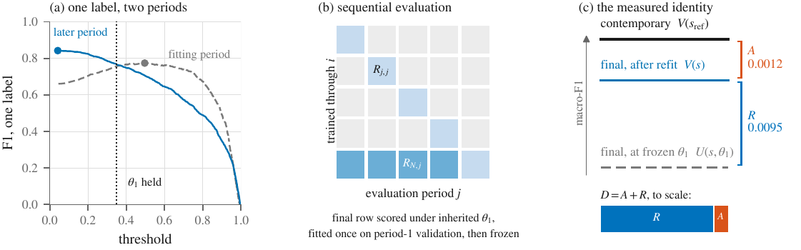
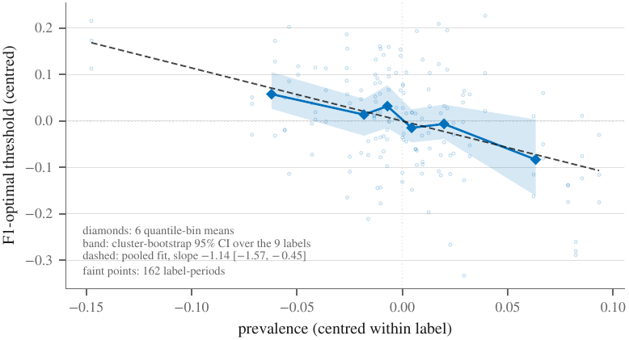
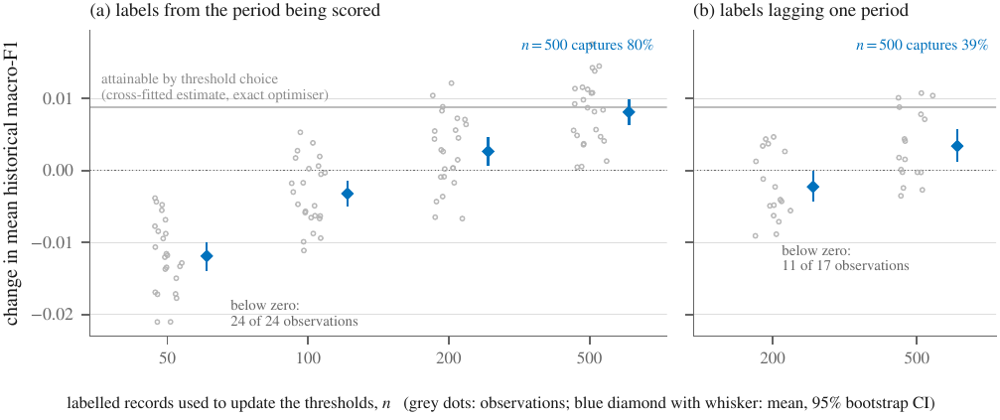

Forgetting versus operating-point drift
Before paying for a continual-learning remedy, check whether the model forgot or its thresholds went stale.
Learning under change is one of the oldest unsolved problems in machine learning. Train a network on one task and then on a second, and the first degrades. That is catastrophic forgetting, documented since the late 1980s [1, 2], and it is still the central obstacle to models that learn from a stream instead of a frozen dataset. I wrote a long primer on this field, what forgetting is, which remedies hold up, and how to read the literature's numbers. This theme grew out of writing that primer, because a measurement problem was hiding inside the field's own bookkeeping, and operational text, aviation safety reports spanning four decades, turned out to be the right place to catch it.
OneThe measurement problem
Deploy a multi-label classifiera over aviation safety reports in 1999. Retrain it as new reports arrive, and each time score it again on the period it was first trained on. The score on the old period falls, a little more with each retraining. Continual learning calls this negative backward transfer and reads it as forgetting [1, 2, 3]. But macro-F1b is not a property of the model. It is a property of the model together with a vector of decision thresholdsc, one per label, and the threshold that maximises F1 for a label moves with that label's prevalence, the share of cases that carry it [4]. If the thresholds were fitted once and carried forward, the score can fall while the model's ranking of cases is untouched. The theme asks how much of what we call forgetting is that, and what to do about the part that is not.

TwoWhy the distinction pays
Models in operation are retrained on schedules, and the remedies the continual-learning literature offers for forgetting, replay buffers, regularisers, architectural growth, cost compute, labels and engineering time [6, 7, 3]. A threshold refit costs a few hundred labelled records. If a large share of the measured deficit sits at the operating point, then the field is scoring expensive interventions against a metric that a cheap one would have repaired, and it is crediting any method that happens to rebalance the effective prior as if it had preserved knowledge. Clinical prediction already knows this pattern under another name: discrimination, the model's ability to rank cases correctly, holds while calibrationd drifts with case-mix, and the recommended response is to update, not to retrain [8, 9, 10]. Nobody had carried that regularity into the continual-learning measurement itself, quantified it, and validated the separation on streams where the cause of the deficit was known by construction.
ThreeThe state of the field
Catastrophic interference has a paper trail reaching back to the late 1980s [1, 2], and the modern remedies are well surveyed [3]. Class-incremental vision found long ago that part of the damage lives in the last layer and can be repaired with a small validation set [11]. Language-model work has just started calling some measured forgetting spurious [12]. The label-shift literature supplies the estimators for a changed prior [13, 14], and the F1-optimal threshold has a known dependence on prevalence [4]. These pieces sat in different fields. None of them had been assembled into a decomposition of a thresholded backward-transfer deficit, and none had been tested causally.
FourOur contribution
The manuscript [5] separates the change in attainable performance from the mismatch of the inherited decision rule, estimates the attainable term by split-half cross-fitting over score-induced thresholds, and validates the separation on controlled failure modes with a known cause: a reweighted prior, which should land almost entirely at the operating point, and a reassigned vocabulary, which should not. On 38 years of ASRS reports most of what the standard metric reported as backward degradation sat at the operating point, and a threshold update on a few hundred labelled records removed it with no change to the model's weights. A preregistered experiment crossing embedding plasticity with optimisation exposure then found the regime in which real attainable degradation does appear, so the claim is bounded rather than universal.


One branch of this work was closed the day it opened, on purpose. We asked whether the part of the deficit we call irreducible was really information still present in the scores but out of reach of a single threshold, which would have meant a richer decision rule could recover it. On this system it could not. The exercise left two lessons I now apply everywhere. The concave envelope of a ROC curve, the curve tracing a classifier's trade-off between true and false positives as its threshold moves, is what randomising between two thresholds attains, not the optimal rule, which reassembles score regions in likelihood-ratio order [15, 16]. And a structural defect in a score is not the same thing as a defect that costs anything at the decision. A negative result that took a day is a good day.
FiveOpen directions
- What continual-learning methods actually repair: A method that improves a thresholded score is scored the same today whether it preserved knowledge or moved the operating point. Streams whose deficit has a known cause make that attribution testable for the first time. PhD
- Repair-depth routing: A maintenance policy that tries the cheapest repair first, threshold refit, then recalibration, then retraining, with the labelled-record budget as the explicit cost and a stopping rule for each rung. MSc or PhD
- Beyond one threshold per label: The same decomposition for argmax, top-K and conformal decision rules, which return the single best label, the best K, or a set of labels with a coverage guarantee, so the operating point is no longer a single cutoff. PhD
- Which decision rules survive which drift: Rank-based decisions are untouched by shifts that wreck a fixed threshold. A general account of which decision-rule invariances match which kinds of drift is the question I would most like to open next. PhD
- The same decomposition on another long-lived stream: Support tickets, clinical coding, construction defect logs. Build the stream, run the decomposition, report the share. MSc
Notes
a By a classifier I mean a machine learning model that assigns each input, here a piece of text, to one of a set of categories; deployed means it runs inside a real workflow rather than an experiment. ↩
b Macro-F1 is a standard summary of classification quality, the F1 score averaged over labels with equal weight, so rare labels count as much as common ones. ↩
c A decision threshold is the cutoff that turns a model's score into a yes or no; the set of cutoffs a system runs with is its operating point. ↩
d A model is calibrated when its probabilities mean what they say: events given thirty per cent happen about thirty per cent of the time. ↩
References
- McCloskey, M. and Cohen, N. J. (1989). Catastrophic interference in connectionist networks: the sequential learning problem. Psychology of Learning and Motivation, 24, 109-165.
- French, R. M. (1999). Catastrophic forgetting in connectionist networks. Trends in Cognitive Sciences, 3(4), 128-135.
- Wang, L., Zhang, X., Su, H. and Zhu, J. (2024). A comprehensive survey of continual learning: theory, method and application. IEEE Transactions on Pattern Analysis and Machine Intelligence, 46(8), 5362-5383. doi:10.1109/TPAMI.2024.3367329
- Lipton, Z. C., Elkan, C. and Narayanaswamy, B. (2014). Optimal thresholding of classifiers to maximize F1 measure. Machine Learning and Knowledge Discovery in Databases (ECML-PKDD).
- Ihshaish, H., Mayhew, P. and Aydin, M. (2026). When thresholded backward transfer does not identify forgetting: attainable performance and operating-point drift in sequential multi-label text classification. Manuscript in final preparation. Not yet peer reviewed. Preprint and codebase on request.
- Kirkpatrick, J. et al. (2017). Overcoming catastrophic forgetting in neural networks. PNAS, 114(13), 3521-3526. doi:10.1073/pnas.1611835114
- Lopez-Paz, D. and Ranzato, M. (2017). Gradient episodic memory for continual learning. Advances in Neural Information Processing Systems.
- Davis, S. E., Lasko, T. A., Chen, G., Siew, E. D. and Matheny, M. E. (2017). Calibration drift in regression and machine learning models for acute kidney injury. Journal of the American Medical Informatics Association, 24(6), 1052-1061. doi:10.1093/jamia/ocx030
- Su, T.-L., Jaki, T., Hickey, G. L., Buchan, I. and Sperrin, M. (2018). A review of statistical updating methods for clinical prediction models. Statistical Methods in Medical Research.
- van Amsterdam, W. A. C. (2024). A causal viewpoint on prediction model performance under changes in case-mix: discrimination and calibration respond differently for prognosis and diagnosis predictions. arXiv:2409.01444
- Wu, Y., Chen, Y., Wang, L., Ye, Y., Liu, Z., Guo, Y. and Fu, Y. (2019). Large scale incremental learning. IEEE/CVF Conference on Computer Vision and Pattern Recognition.
- Zheng, J., Cai, X., Qiu, S. and Ma, Q. (2025). Spurious forgetting in continual learning of language models. International Conference on Learning Representations. arXiv:2501.13453
- Saerens, M., Latinne, P. and Decaestecker, C. (2002). Adjusting the outputs of a classifier to new a priori probabilities: a simple procedure. Neural Computation, 14(1), 21-41. doi:10.1162/089976602753284446
- Lipton, Z. C., Wang, Y.-X. and Smola, A. (2018). Detecting and correcting for label shift with black box predictors. International Conference on Machine Learning.
- Provost, F. and Fawcett, T. (2001). Robust classification for imprecise environments. Machine Learning, 42, 203-231. doi:10.1023/A:1007601015854
- Medlock, C. and Oppenheim, A. (2020). Optimal ROC curves from score variable threshold tests. arXiv:2012.08391